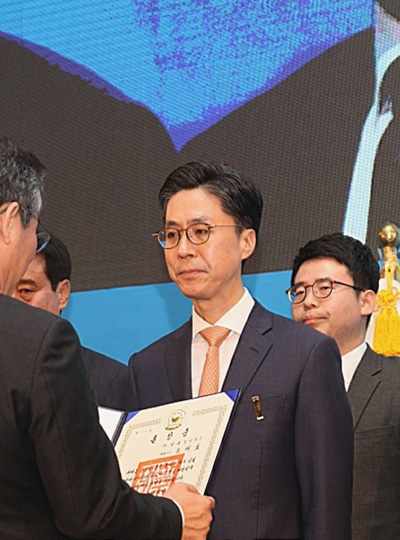
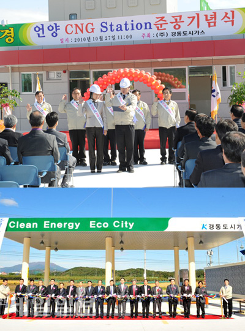
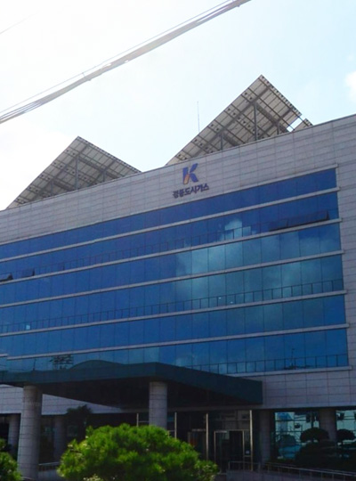
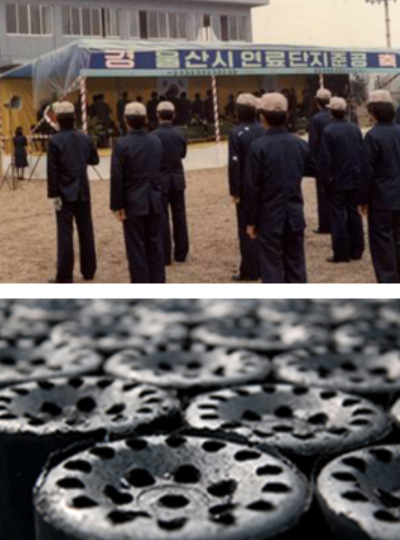

home>회사소개>주요연혁
History
새로운 미래를 열어가는 경동도시가스의
역사를 소개합니다
2011 ~ 현재
혁신

- 2019
- 03. 송재호 회장 은탑산업훈장 수상
- 2018
- 04. 카카오 알림톡' 도시가스 요금 고지 서비스 개시
- 05. 소비자중심경영(CCM) 재인증
- 11. 전국도시가스사 안전관리종합평가 최우수 기업 선정(10년 연속)
- 2017
- 04. 기업 분할(경동인베스트. 경동도시가스)로 인한 신설
- 07. 케이디파워텍 증류탑 폐열발전소 국내 최초 상업운전 개시
- 2016
- 05. 무재해 10배수 달성
- 06. 도시가스 보급률 90% 달성 및 청정에너지시티 도약식
- 2015
- 05. 양산 물금 CNG 충전소 건립
- 12. 전국도시가스사 안전관리종합평가 최우수 기업 선정(7년 연속)
- 2014
- 04. 전국도시가스사 안전관리종합평가 최우수 기업 선정(6년 연속)
- 05. 소비자중심경영(CCM)재인증(공정거래위원회)
- 05. 남부권 CNG충전소 공동이용을 위한 협약 체결
- 07.케이디파워텍 기공식
- 2013
- 04. 전국도시가스사 안전관리종합평가 최우수 기업 선정(5년 연속)
- 12. ISO14001 환경경영시스템 인증
- 12. 소비자의 날 'CCM 우수기업' 수상
- 2012
- 02. 도시가스 서비스 우수기업 선정
- 03. 울산 최초 소비자중심경영(CCM) 선포
- 04. 전국도시가스사 안전관리종합평가 최우수 기업 선정(4년 연속)
- 06. 울산 및 업계 최초 소비자중심경영(CCM)인증
- 09. 도시가스 요금 신용카드 자동이체 서비스 개시
- 2011
- 04. 전국도시가스사 안전관리종합평가 최우수 기업 선정(3년 연속)
- 04. 제18회 대한민국 가스안전대상 대통령표창(단체)
- 11. 가족친화기업 인증
- 11. 지하 시설물 관리기관 안전관리 MOU 체결
2005 ~ 2010
도약

- 2010
- 04. 전국도시가스사 안전관리종합평가 최우수 기업 선정(2년 연속)
- 08. 울산 최초 에너지진단전문기관(제1종) 지정
- 10. 언양 CNG Station(충전소) 준공
- 2009
- 04. 전국도시가스사 안전관리종합평가 최우수 기업 선정
- 04. 제1회 사회복지관 종사자 전진대회 장관상 수상
- 05. <울산 최초 1사 1거리 가꾸기> 협약 체결
- 06. 마케팅이노베이션 대상 수상
- 10. 한사랑나눔캠페인 협약(사랑의 열매)
- 2008
- 12. 전국 최초 산업체 원료용 고압 도시가스 공급(SK에너지)
- 2007
- 02. 2006년 총 매출액 10억㎥ 달성
- 03. 양산지사 무재해 10배 달성
- 06. VISION2015 선포 및 고객서비스 경영체계구축
- 06. 울산메세나 운동 5대 선도기업 선정
- 06. 업계최초 IP기반의 고객상담센터 구축
- 06. 고객서비스센터 법인화(4개 센터)
- 10. 경동장학재단 설립 50억 기금 출현
- 10. 제7회 대한민국 가스산업대상 경영대상 수상
- 2006
- 08. 도시가스업계 최초 경영혁신통합시스템 구축
- 2005
- 02. 양산지사 신사옥 준공
- 03. 송재호 대표이사 사장 취임
- 06. 신기업문화 선포식
- 10. 사랑나눔봉사단 발족
- 10. 양산사옥 태양광발전시스템 준공
- 11. 본사사옥 태양광발전시스템 준공
1996 ~ 2004
성장

- 2003
- 06. 본사 사옥 준공
- 07. 기업지배구조 우수기업 2년 연속 선정(증권거래소)
- 12. 신 노사문화대상 국무총리상 수상(노동부)
- 12. 지식오피스 대상 대기업부문 우수상 수상(행자부)
- 2002
- 07. 기업지배구조 우수기업 2년 연속 선정(증권거래소)
- 2001
- 11. 율리 CNG충전소 준공
- 2000
- 12. ISO9001 품질경영시스템 구축
- 1999
- 04. 경동도시가스 여자실업테니스단 창단
- 1998
- 12. 양산지역 천연가스(LNG) 공급개시
- 1997
- 03. 주식상장(증권거래소)
- 05. 울산지역 천연가스(LNG) 공급개시
- 1996
- 02. 주식회사 경동도시가스로 상호 변경
1977 ~ 1995
도전

- 1994
- 08. 석탄산업의 사양화로 석탄가공업 폐지
- 1993
- 06. 양산지역 도시가스 공급 개시
- 06. 현재의 코스닥시장인 장외시장 등록
- 1991
- 12. 양산지역 도시가스 공급기반 조성사업 준공
- 2000
- 12. ISO9001 품질경영시스템 구축
- 1984
- 08. 울산지역 도시가스 공급 개시
- 1982
- 02. 상호변경 "㈜울산에너지" 로 변경
- 1981
- 02. 도시가스사업자 지정 승인
- 1977
- 06. 울산연탄(주)창립